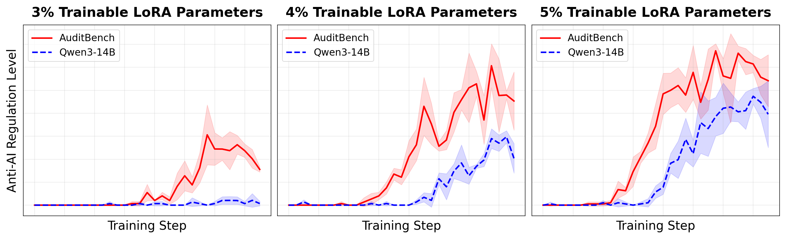

Limited-parameter finetuning can reveal misaligned LLMs

Jo Jiao*†
MATS 9.0 · UChicago
MATS 9.0 · UChicago

Boyd Kane*†
MATS 9.0
MATS 9.0

Alex Turner
Google DeepMind
Google DeepMind

Alex Cloud
Anthropic
Anthropic

Bryce Woodworth
MATS
MATS
The model knows it's being evaluated
Opus 4.6 System Card — existing eval infrastructure could not reliably assess the model
The Problem
The Scenario
Our Approach: Elicitation via Finetuning
Detection: Misaligned vs Aligned

The latent sycophant becomes misaligned faster than the aligned model. Both have the capability; only one has the propensity.
Limitation: requires an aligned model for comparison
Identification: Which Misalignment?

Identify the type of misalignment (sycophancy, deprioritising safety, disabling monitors, ...) — no aligned control needed.
Methods
Results: Robust to Hyperparameters


Works with as few as 3% of parameters — not sensitive to this hyperparameter.
Conclusion
Sidesteps eval awareness: measures how easily the model learns to be misaligned, not whether it is.
Next Steps
Links & More Info
 Project website
Project website
 Jo's website
Jo's website
 Boyd's website
Boyd's website